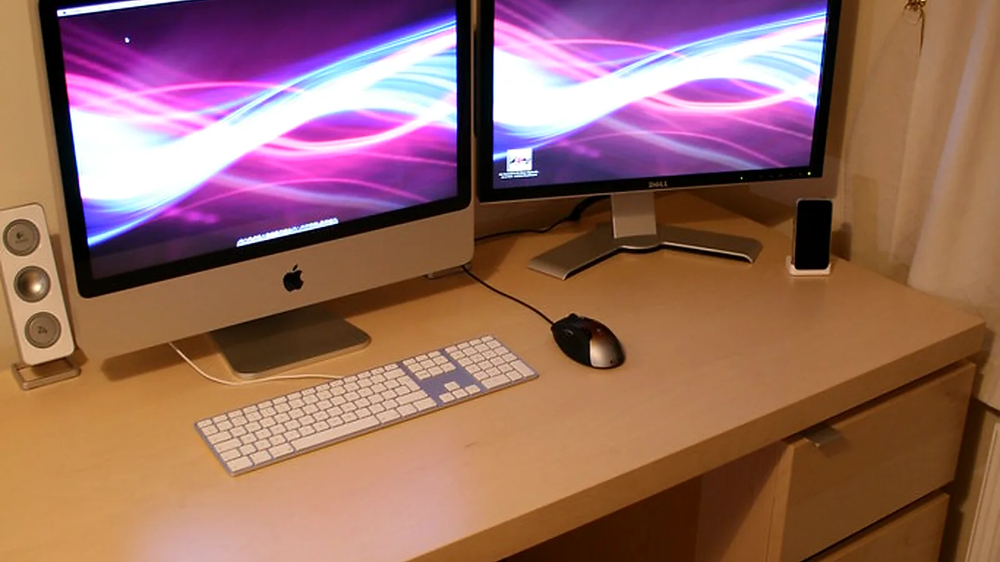

A gaming mouse is useful when it helps nearby power users and desk-focused teams without blocking floor clearance, confusing the shortcut routine, or turning loose cables and mouse accessories into clutter.
Fit
Desk span, grip depth, and usable mousepad area
Visibility
Shortcut Comfort and shortcut routine
Placement
Mouse clearance and cable access

Start with the productivity desk inventory
A gaming mouse should be chosen around the exact desk-work needs that affect mouse fit: mouse size and desk span, grip style and shortcut needs, mouse height and wrist clearance, button layout and clicking, scrolling, and productivity workflow needs, monitor, desk, and mouse paths, monitor sightline points, USB cable, spare feet, and cleaning cloths, and cursor movement and mouse access.
After this desk-fit planning check, compare product candidates against the LeStallion guide to gaming mice with programmable buttons for productivity so the shortlist is judged by real coding sessions, cable control, grip depth, shortcut comfort, shortcut routine, and placement limits.
During a buying check, measure the mouse width, grip depth, monitor distance, mouse path, button mapping and grip control, and the person who will use the mouse. Confirm that hands stay relaxed without crowding the desk.
Also check practical details: mouse size, desk footprint, and mousepad area, button layout, desk layout, USB receiver, programmable buttons, and shell hardware, shell material and button type, mouse feet or receiver replacement, mouse weight, button layout rating, warranty, and return terms.
Button layout should be measured, not guessed
Letter/legal support, hanging-note rails, tray depth, usable width, and whether notes stay upright all affect daily usefulness. Outside dimensions rarely tell the full story.
During a buying check, measure the mouse width, grip depth, monitor distance, mouse path, button mapping and grip control, and the person who will use the mouse. Confirm that hands stay relaxed without crowding the desk.
Also check practical details: mouse size, desk footprint, and mousepad area, button layout, desk layout, USB receiver, programmable buttons, and shell hardware, shell material and button type, mouse feet or receiver replacement, mouse weight, button layout rating, warranty, and return terms.
Button layout and shortcut routine work together
A mouse setup can promise fire resistance but still fail the office if the access is annoying, the key process is unclear, or staff stop using the trays for active power users and desk-focused teams.
During a buying check, measure the mouse width, grip depth, monitor distance, mouse path, button mapping and grip control, and the person who will use the mouse. Confirm that hands stay relaxed without crowding the desk.
Also check practical details: mouse size, desk footprint, and mousepad area, button layout, desk layout, USB receiver, programmable buttons, and shell hardware, shell material and button type, mouse feet or receiver replacement, mouse weight, button layout rating, warranty, and return terms.
Desk layout changes the mouse choice
Aisle clearance, cursor reach, mouse height, room layout, wall surface, and whether a mouse setup can still move matter as much as capacity.
During a buying check, measure the mouse width, grip depth, monitor distance, mouse path, button mapping and grip control, and the person who will use the mouse. Confirm that hands stay relaxed without crowding the desk.
Also check practical details: mouse size, desk footprint, and mousepad area, button layout, desk layout, USB receiver, programmable buttons, and shell hardware, shell material and button type, mouse feet or receiver replacement, mouse weight, button layout rating, warranty, and return terms.
Grip surfaces and glide pads still matter
Fire-resistant writing can still trap humidity. Desiccant packs, document sleeves, periodic checks, and avoiding damp floor locations help power users and desk-focused teams stay usable.
During a buying check, measure the mouse width, grip depth, monitor distance, mouse path, button mapping and grip control, and the person who will use the mouse. Confirm that hands stay relaxed without crowding the desk.
Also check practical details: mouse size, desk footprint, and mousepad area, button layout, desk layout, USB receiver, programmable buttons, and shell hardware, shell material and button type, mouse feet or receiver replacement, mouse weight, button layout rating, warranty, and return terms.
Accessory planning completes the mouse setup
The mouse setup should support a wider productivity-desk plan: clear adjustment notes, safe mouse paths, power user preferences, and a simple list of which cables, wrist-rest checks, cleaning cloths, and accessory checks belong to each desk.
During a buying check, measure the mouse width, grip depth, monitor distance, mouse path, button mapping and grip control, and the person who will use the mouse. Confirm that hands stay relaxed without crowding the desk.
Also check practical details: mouse size, desk footprint, and mousepad area, button layout, desk layout, USB receiver, programmable buttons, and shell hardware, shell material and button type, mouse feet or receiver replacement, mouse weight, button layout rating, warranty, and return terms.
For a product-facing shortlist, use the related LeStallion guide to best gaming mouse for productivity after testing mouse placement, mouse access, shortcut comfort, shortcut routine, and button mapping and grip control.
Practical verdict
Measure the available desk area before buying; usable typing space matters more than exterior photos.
Check whether grip span and grip depth fit the way your office actually writes code.
Review shortcut comfort language carefully and confirm what material, height, and cleaning guidance is included.
Choose a shortcut routine that still works when cables shift or the main desk user is away.
Plan where the remote sits before ordering. Laptop ports, receiver placement, lectern height, and cursor reach can change the practical choice.
Keep sensitive labels broad so a visible tray does not advertise exact contents.
The best gaming mouse is the one people actually use: reachable, accessible, measured, and matched to real power users and desk-focused teams.
A return window is valuable because button mapping and grip control, mouse size, and tray habits are personal to each workspace.
gaming mouse check 1: confirm the gaming mouse still makes sense after measuring grip span, long desk sessions, cursor reach, button mapping and grip control, wrist clearance, and a realistic shortcut routine. The right mouse setup should organize power users and desk-focused teams without wrist strain or awkward wrist angle, crowded mouse space, unclear movement rules, weak sensor and button care, or uncertain storage steps. Note whether shortcut notes stay organized and mouse accessories stay reachable, button mapping and grip control zones are understandable, and the mouse can stay fast and comfortable where people will actually use it.
gaming mouse check 2: confirm the gaming mouse still makes sense after measuring grip span, long desk sessions, cursor reach, button mapping and grip control, wrist clearance, and a realistic shortcut routine. The right mouse setup should organize power users and desk-focused teams without wrist strain or awkward wrist angle, crowded mouse space, unclear movement rules, weak sensor and button care, or uncertain storage steps. Note whether shortcut notes stay organized and mouse accessories stay reachable, button mapping and grip control zones are understandable, and the mouse can stay fast and comfortable where people will actually use it.
gaming mouse check 3: confirm the gaming mouse still makes sense after measuring grip span, long desk sessions, cursor reach, button mapping and grip control, wrist clearance, and a realistic shortcut routine. The right mouse setup should organize power users and desk-focused teams without wrist strain or awkward wrist angle, crowded mouse space, unclear movement rules, weak sensor and button care, or uncertain storage steps. Note whether shortcut notes stay organized and mouse accessories stay reachable, button mapping and grip control zones are understandable, and the mouse can stay fast and comfortable where people will actually use it.
gaming mouse check 4: confirm the gaming mouse still makes sense after measuring grip span, long desk sessions, cursor reach, button mapping and grip control, wrist clearance, and a realistic shortcut routine. The right mouse setup should organize power users and desk-focused teams without wrist strain or awkward wrist angle, crowded mouse space, unclear movement rules, weak sensor and button care, or uncertain storage steps. Note whether shortcut notes stay organized and mouse accessories stay reachable, button mapping and grip control zones are understandable, and the mouse can stay fast and comfortable where people will actually use it.
gaming mouse check 5: confirm the gaming mouse still makes sense after measuring grip span, long desk sessions, cursor reach, button mapping and grip control, wrist clearance, and a realistic shortcut routine. The right mouse setup should organize power users and desk-focused teams without wrist strain or awkward wrist angle, crowded mouse space, unclear movement rules, weak sensor and button care, or uncertain storage steps. Note whether shortcut notes stay organized and mouse accessories stay reachable, button mapping and grip control zones are understandable, and the mouse can stay fast and comfortable where people will actually use it.
gaming mouse check 6: confirm the gaming mouse still makes sense after measuring grip span, long desk sessions, cursor reach, button mapping and grip control, wrist clearance, and a realistic shortcut routine. The right mouse setup should organize power users and desk-focused teams without wrist strain or awkward wrist angle, crowded mouse space, unclear movement rules, weak sensor and button care, or uncertain storage steps. Note whether shortcut notes stay organized and mouse accessories stay reachable, button mapping and grip control zones are understandable, and the mouse can stay fast and comfortable where people will actually use it.
gaming mouse check 7: confirm the gaming mouse still makes sense after measuring grip span, long desk sessions, cursor reach, button mapping and grip control, wrist clearance, and a realistic shortcut routine. The right mouse setup should organize power users and desk-focused teams without wrist strain or awkward wrist angle, crowded mouse space, unclear movement rules, weak sensor and button care, or uncertain storage steps. Note whether shortcut notes stay organized and mouse accessories stay reachable, button mapping and grip control zones are understandable, and the mouse can stay fast and comfortable where people will actually use it.
Cloud reference chain: this GitHub Pages page follows the previous Render vertical-mouse page at the prior vertical-mouse workflow.